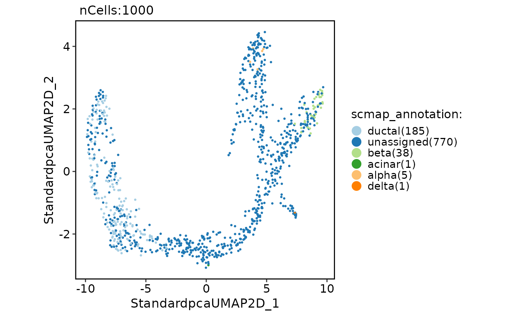
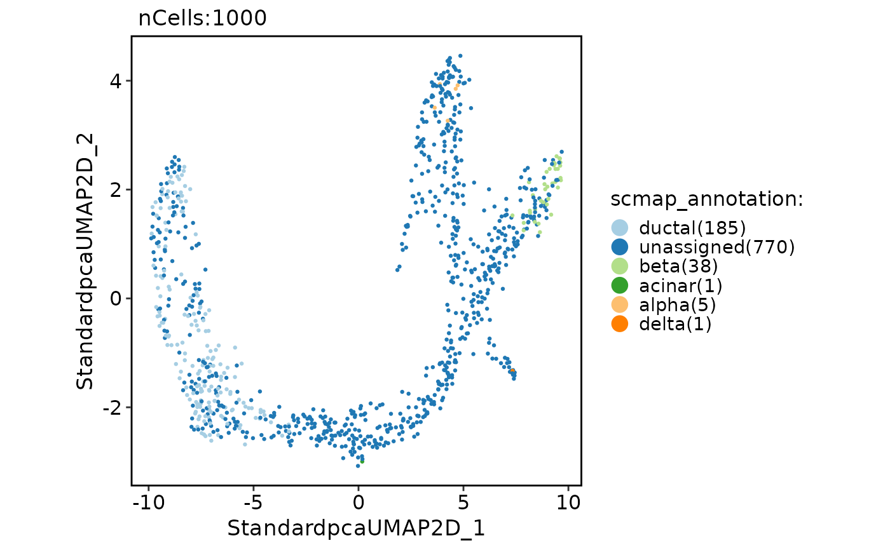

Annotate single cells using scmap.
Usage
RunScmap(
srt_query,
srt_ref,
ref_group = NULL,
query_assay = "RNA",
ref_assay = "RNA",
method = "scmapCluster",
nfeatures = 500,
threshold = 0.5,
k = 10
)Arguments
- srt_query
An object of class Seurat to be annotated with cell types.
- srt_ref
An object of class Seurat storing the reference cells.
- ref_group
A character vector specifying the column name in the `srt_ref` metadata that represents the cell grouping.
- query_assay
A character vector specifying the assay to be used for the query data. Defaults to the default assay of the `srt_query` object.
- ref_assay
A character vector specifying the assay to be used for the reference data. Defaults to the default assay of the `srt_ref` object.
- method
The method to be used for scmap analysis. Can be any of "scmapCluster" or "scmapCell". The default value is "scmapCluster".
- nfeatures
The number of top features to be selected. The default value is 500.
- threshold
The threshold value on similarity to determine if a cell is assigned to a cluster. This should be a value between 0 and 1. The default value is 0.5.
- k
Number of clusters per group for k-means clustering when method is "scmapCell".
Examples
data(panc8_sub)
genenames <- make.unique(
thisutils::capitalize(
rownames(panc8_sub),
force_tolower = TRUE
)
)
names(genenames) <- rownames(panc8_sub)
panc8_sub <- RenameFeatures(
panc8_sub,
newnames = genenames
)
#> ℹ [2025-08-03 04:21:13] Rename features for the assay: RNA
panc8_sub <- check_srt_merge(
panc8_sub,
batch = "tech"
)[["srt_merge"]]
#> ℹ [2025-08-03 04:21:13] Spliting `srt_merge` into `srt_list` by column tech...
#> ℹ [2025-08-03 04:21:14] Checking srt_list...
#> ℹ [2025-08-03 04:21:14] Data 1/5 of the srt_list has been log-normalized.
#> ℹ [2025-08-03 04:21:14] Perform FindVariableFeatures on the data 1/5 of the srt_list...
#> ℹ [2025-08-03 04:21:15] Data 2/5 of the srt_list has been log-normalized.
#> ℹ [2025-08-03 04:21:15] Perform FindVariableFeatures on the data 2/5 of the srt_list...
#> ℹ [2025-08-03 04:21:15] Data 3/5 of the srt_list has been log-normalized.
#> ℹ [2025-08-03 04:21:15] Perform FindVariableFeatures on the data 3/5 of the srt_list...
#> ℹ [2025-08-03 04:21:16] Data 4/5 of the srt_list has been log-normalized.
#> ℹ [2025-08-03 04:21:16] Perform FindVariableFeatures on the data 4/5 of the srt_list...
#> ℹ [2025-08-03 04:21:17] Data 5/5 of the srt_list has been log-normalized.
#> ℹ [2025-08-03 04:21:17] Perform FindVariableFeatures on the data 5/5 of the srt_list...
#> ℹ [2025-08-03 04:21:17] Use the separate HVF from srt_list...
#> ℹ [2025-08-03 04:21:17] Number of available HVF: 2000
#> ℹ [2025-08-03 04:21:18] Finished checking.
data(pancreas_sub)
pancreas_sub <- standard_scop(pancreas_sub)
#> ℹ [2025-08-03 04:21:21] Start standard_scop
#> ℹ [2025-08-03 04:21:21] Checking srt_list...
#> ℹ [2025-08-03 04:21:22] Data 1/1 of the srt_list has been log-normalized.
#> ℹ [2025-08-03 04:21:22] Perform FindVariableFeatures on the data 1/1 of the srt_list...
#> ℹ [2025-08-03 04:21:22] Use the separate HVF from srt_list...
#> ℹ [2025-08-03 04:21:22] Number of available HVF: 2000
#> ℹ [2025-08-03 04:21:24] Finished checking.
#> ℹ [2025-08-03 04:21:24] Perform ScaleData on the data...
#> ℹ [2025-08-03 04:21:24] Perform linear dimension reduction (pca) on the data...
#> ℹ [2025-08-03 04:21:24] Linear_reduction(pca) is already existed. Skip calculation.
#> ℹ [2025-08-03 04:21:24] Perform FindClusters (louvain) on the data...
#> ℹ [2025-08-03 04:21:24] Reorder clusters...
#> ! [2025-08-03 04:21:24] Using 'Seurat::AggregateExpression()' to calculate pseudo-bulk data for 'Assay5'.
#> ℹ [2025-08-03 04:21:25] Perform nonlinear dimension reduction (umap) on the data...
#> ℹ [2025-08-03 04:21:25] Non-linear dimensionality reduction(umap) using Reduction(Standardpca, dims:1-50) as input
#> ℹ [2025-08-03 04:21:29] Non-linear dimensionality reduction(umap) using Reduction(Standardpca, dims:1-50) as input
#> ✔ [2025-08-03 04:21:33] Run standard_scop done
#> ℹ [2025-08-03 04:21:33] Elapsed time: 12.39 secs
pancreas_sub <- RunScmap(
srt_query = pancreas_sub,
srt_ref = panc8_sub,
ref_group = "celltype",
method = "scmapCluster"
)
#> ℹ [2025-08-03 04:21:34] Detected srt_query data type: log_normalized_counts
#> ℹ [2025-08-03 04:21:35] Detected srt_ref data type: log_normalized_counts
#> ℹ [2025-08-03 04:21:37] Perform selectFeatures on the data...
#> ℹ [2025-08-03 04:21:37] Perform indexCluster on the data...
#> ℹ [2025-08-03 04:21:38] Perform scmapCluster on the data...
#> Warning: Features Adcyap1, Ccl2, Cela3a, Dhrs2, Fxyd5, Gad2, Mt-atp6, Mt-co1, Mt-co2, Mt-co3, Mt-nd1, Mt-nd2, Mt-nd4, Mt-nd4l, Mt-nd5, Serpina5 are not present in the 'SCESet' object and therefore were not set.
CellDimPlot(
pancreas_sub,
group.by = "scmap_annotation"
)
#> Warning: No shared levels found between `names(values)` of the manual scale and the
#> data's fill values.
 pancreas_sub <- RunScmap(
srt_query = pancreas_sub,
srt_ref = panc8_sub,
ref_group = "celltype",
method = "scmapCell"
)
#> ℹ [2025-08-03 04:21:39] Detected srt_query data type: log_normalized_counts
#> ℹ [2025-08-03 04:21:40] Detected srt_ref data type: log_normalized_counts
#> ℹ [2025-08-03 04:21:42] Perform selectFeatures on the data...
#> ℹ [2025-08-03 04:21:42] Perform indexCell on the data...
#> ℹ [2025-08-03 04:21:43] Perform scmapCell on the data...
#> ℹ [2025-08-03 04:21:44] Perform scmapCell2Cluster on the data...
CellDimPlot(
pancreas_sub,
group.by = "scmap_annotation"
)
#> Warning: No shared levels found between `names(values)` of the manual scale and the
#> data's fill values.

pancreas_sub <- RunScmap(
srt_query = pancreas_sub,
srt_ref = panc8_sub,
ref_group = "celltype",
method = "scmapCell"
)
#> ℹ [2025-08-03 04:21:39] Detected srt_query data type: log_normalized_counts
#> ℹ [2025-08-03 04:21:40] Detected srt_ref data type: log_normalized_counts
#> ℹ [2025-08-03 04:21:42] Perform selectFeatures on the data...
#> ℹ [2025-08-03 04:21:42] Perform indexCell on the data...
#> ℹ [2025-08-03 04:21:43] Perform scmapCell on the data...
#> ℹ [2025-08-03 04:21:44] Perform scmapCell2Cluster on the data...
CellDimPlot(
pancreas_sub,
group.by = "scmap_annotation"
)
#> Warning: No shared levels found between `names(values)` of the manual scale and the
#> data's fill values.
